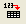

充電式バッテリーの統計量の積上げ棒グラフ
StackColumn-Rechargeable-Battery
サマリー
このチュートリアルは、積上げ棒グラフを作成する方法を示します。

必要なOriginのバージョン: Origin 2015 SR0以降
学習する項目
このチュートリアルでは、以下の項目について説明します。
ステップ
- 新しいワークシートを作成します。サンプルデータをインポートします。
- すべての列を選択し、2Dグラフギャラリーツールバーから積上げ縦棒をクリックします。
- グラフは次のようになります。
- そして、グラフにテーマを適用し、上X軸と右Y軸を追加します。環境設定：テーマオーガナイザを選択して、テーマオーガナイザダイアログを開きます。グラフ タブをアクティブにし、表からOpposit Lines を選択します。そして、「今すぐ適用」ボタンをクリックします。閉じるボタンをクリックしてダイアログを閉じます。
- Y軸をダブルクリックして、軸ダイアログ を開きます。グリッド線タブを開いてから水平アイコンが選択されている事を確認し、主グリッド線セクションの表示にチェックを付けます。OKボタンをクリックして、グラフにグリッド線を追加します。
- タイトルタブを開いてY軸タイトルをMillions of Unit Batteriesとします。上アイコンを選択してグラフタイトルをRechargeable Batteries CCCとします。グラフは次のようになります。
サンプルデータ
http://www.originlab.com/ftp/graph_gallery/data/Stack_Column_and_Bar_Charts.txtからStack_Column_and_Bar_Charts.txtファイルをダウンロードします。単一ASCIIインポートボタン  をクリックし、ファイルを選択して、Originにインポートします。
以下の表はサンプルデータの一部です。
| year(X)
|
Nicd(Y)
|
NiMh(Y)
|
Lion(Y)
|
| 1991
|
777719
|
--
|
--
|
| 1992
|
759629
|
--
|
--
|
| 1993
|
807048
|
72204
|
--
|
| 1994
|
879264
|
204666
|
12000
|
| 1995
|
872698
|
306106
|
32029
|
| 1996
|
694384
|
356218
|
125388
|
| 1997
|
703296
|
580930
|
193496
|